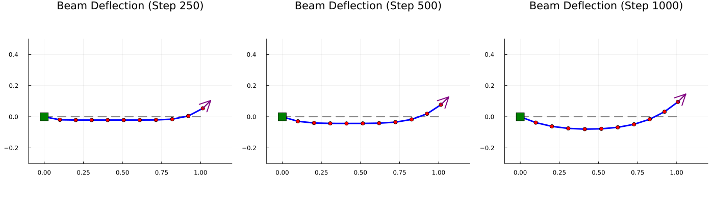
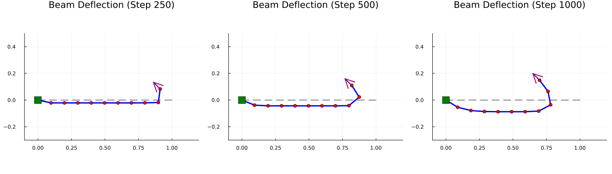
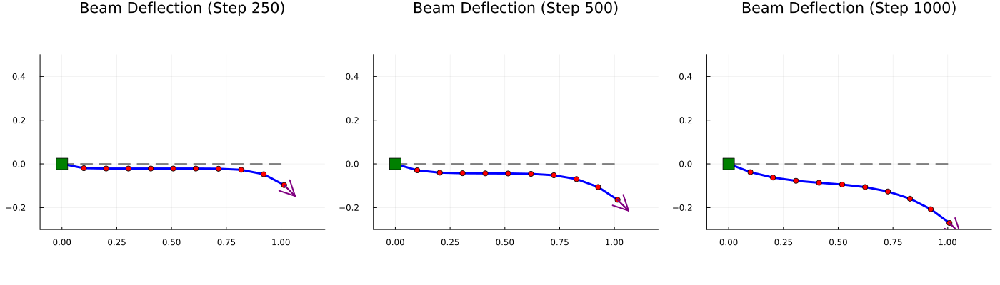
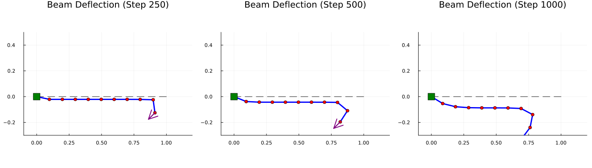
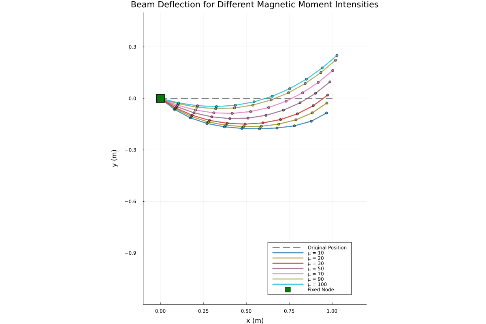
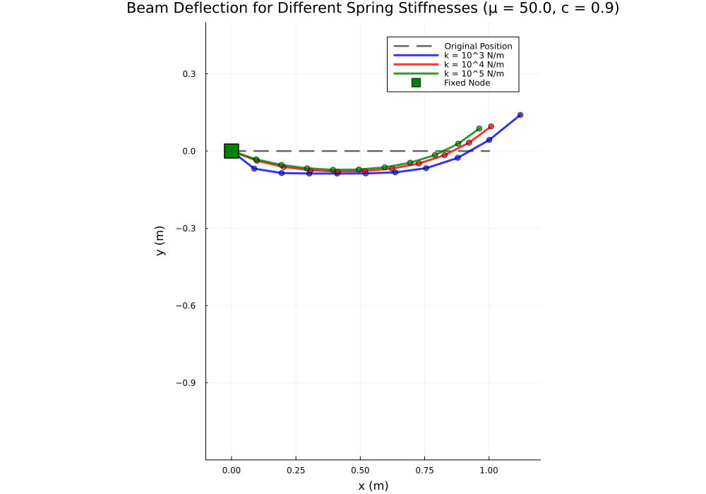
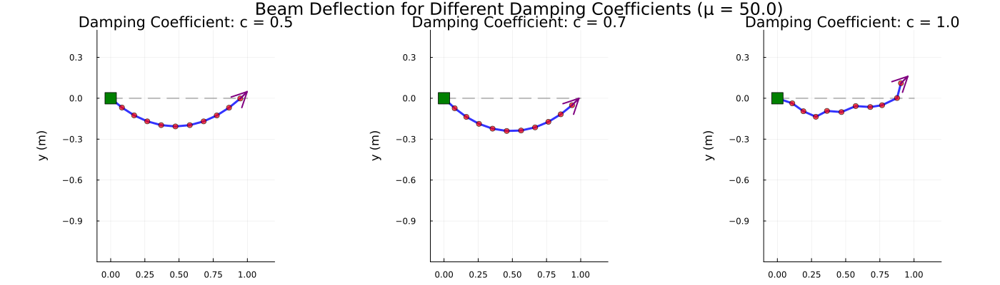
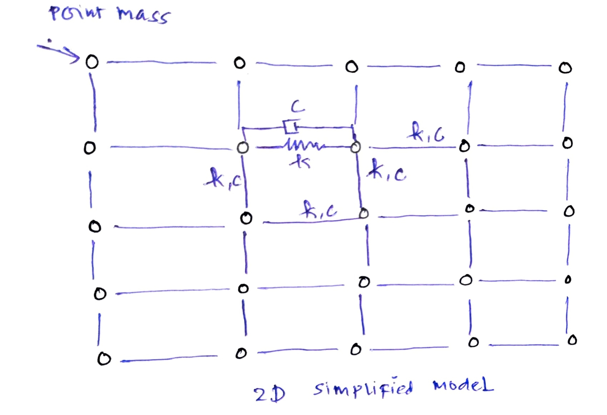

Cantilever Beam Simulation with Magnetic Actuation
Table of Contents
1. Introduction
2. Discrete Differential Geometry Method
3. Numerical Modeling of Structure
The dynamics of the system is governed by the second-order differential equation:
\[ M\ddot{q} + C\dot{q} + Kq(t) = F^{\text{ext}}(t) \]
where:
- \(M\)
- Lumped Mass Matrix
- \(C\)
- Damping Coefficient
- \(K\)
- Spring Constant
and \(\ddot{q}(t)\), \(\dot{q}(t)\), \(q(t)\) represent acceleration, velocity, and position respectively.
3.1. Magnetic Actuation
The magnetic force acting on the beam is given by:
\[F_{\text{magnetic}} = \chi B(t)^2 \cdot \mathbf{B}_{\text{direction}} \]
where:
- \(\chi\)
- Magnetic susceptibility of the material
- \(B(t)\)
- Time-dependent magnetic field strength given by \(B(t) = B_{\text{strength}} \sin(2\pi f t)\), where \(f\) is the driving frequency
- \(\mathbf{B}_{\text{direction}}\)
- Unit vector specifying the direction of the magnetic field
3.2. Solution by Implicit Euler Method
The time integration is performed using the implicit Euler scheme:
\begin{align*} q(t_{k+1}) &= q(t_k) + \dot{q}(t_{k+1}) \Delta t \\ \dot{q}(t_{k+1}) &= \dot{q}(t_k) + \ddot{q}(t_{k+1}) \Delta t \end{align*}where \(\Delta t\) is the timestep and subscripts \(k\) and \(k+1\) denote the current and next time levels respectively.
4. 1D Implementations
4.1. Numerical Framework
4.1.1. Physical Model and Discretization
The 1D cantilever beam is modeled as a discrete system of \(n\) point masses connected by linear spring-damper elements. This approach, known as the lumped mass method, is a fundamental technique in computational mechanics for discretizing continuous structures.
Geometry Setup: The beam is initially straight and horizontal, with nodes uniformly distributed along the x-axis from the fixed end (at \(x=0\)) to the free end (at \(x=L_0 = 1.0\) m). The $i$-th node is located at position:
\[\mathbf{x}_i^{(0)} = [(i-1) \times 0.1, 0.0]^T \quad \text{for} \quad i = 1, 2, \ldots, 11\]
Each node \(i\) has associated with it:
- Position vector: \(\mathbf{q}_i(t) \in \mathbb{R}^2\) (coordinates in 2D physical space: x and y)
- Velocity vector: \(\dot{\mathbf{q}}_i(t) \in \mathbb{R}^2\) (time derivative of position)
- Acceleration vector: \(\ddot{\mathbf{q}}_i(t) \in \mathbb{R}^2\) (time derivative of velocity)
- Lumped mass: \(m_i = 1.0\) kg (concentrated point mass)
Connectivity Model: Adjacent nodes are connected by linear spring-damper elements (also called Kelvin-Voigt elements). An edge connects nodes \(i\) and \(i+1\) for \(i = 1, 2, \ldots, 10\). This creates 10 spring-damper pairs linking the 11 nodes.
4.1.2. Force Components and Governing Equations
For each free node (nodes not fixed to a boundary), the equation of motion follows Newton's second law:
\[m_i \ddot{\mathbf{q}}_i = \mathbf{F}_{\text{spring},i} + \mathbf{F}_{\text{mag},i} + \mathbf{F}_{\text{grav},i}\]
The three force components are:
1. Spring Force (\(\mathbf{F}_{\text{spring},i}\)):
Spring forces arise from the elastic deformation of elements connecting adjacent nodes. For an edge between nodes \(i\) and \(j\), the spring force depends on the deviation from the rest length:
\[\mathbf{F}_{\text{spring}} = k \frac{L - L_0}{L} \mathbf{r}\]
where:
- \(k = 10^4\) N/m is the spring stiffness constant
- \(\mathbf{r} = \mathbf{q}_j - \mathbf{q}_i\) is the displacement vector between nodes
- \(L = \|\mathbf{r}\| = \sqrt{r_x^2 + r_y^2}\) is the current length
- \(L_0 = 0.1\) m is the rest (unstretched) length
The term \(\frac{L - L_0}{L}\) represents the strain ratio: positive when stretched (\(L > L_0\)), negative when compressed (\(L < L_0\)). The force acts along the direction of \(\mathbf{r}\), pulling nodes together when stretched and pushing them apart when compressed.
For node \(i\), the total spring force is the sum of contributions from both adjacent springs: \[\mathbf{F}_{\text{spring},i} = \sum_{\text{adjacent nodes } j} k \frac{L_{ij} - L_{0}}{L_{ij}} \mathbf{r}_{ij}\]
2. Gravitational Force (\(\mathbf{F}_{\text{grav},i}\)):
Each node experiences a downward gravitational force:
\[\mathbf{F}_{\text{grav},i} = m_i \mathbf{g} = m_i \begin{bmatrix} 0 \\ -9.81 \end{bmatrix} \text{ N}\]
This creates a distributed load along the entire beam, causing downward deflection in the absence of other supporting forces.
3. Magnetic Force (\(\mathbf{F}_{\text{mag},i}\)):
The magnetic force is applied only at the free end (node 11, the rightmost node):
\[\mathbf{F}_{\text{mag}} = \chi \mathbf{B}_{\text{direction}}\]
where:
- \(\chi = 50\) is the magnetic moment magnitude (dimensionless in this simplified model)
- \(\mathbf{B}_{\text{direction}}\) is a unit vector specifying the direction of the applied field
This force creates lateral loading that deflects the free end in the specified direction. Unlike gravitational force which is distributed, the magnetic force is concentrated at a single point.
4.1.3. Damping Model
Damping dissipates energy from the system, preventing indefinite oscillation and modeling physical energy losses. In this implementation, velocity-proportional damping is applied at each time step:
\[\mathbf{v}_i^{\text{new}} = c_d \cdot \mathbf{v}_i^{\text{old}}\]
where \(c_d \in [0.5, 1.0]\) is the damping coefficient:
- \(c_d = 0.5\) represents high energy dissipation (heavily damped system)
- \(c_d = 0.9\) represents moderate damping (typical structural damping)
- \(c_d = 1.0\) represents no damping (undamped system)
This multiplicative damping is applied after velocity updates and effectively scales down velocities each timestep, simulating viscous friction and material internal dissipation.
4.1.4. Time Integration Scheme
The simulation advances in time using explicit Euler integration with adaptive damping:
Step 1 - Compute all forces: For each node, calculate the total force by summing spring, magnetic, and gravitational contributions:
\[\mathbf{F}_i^{(k)} = \mathbf{F}_{\text{spring},i} + \mathbf{F}_{\text{mag},i} + \mathbf{F}_{\text{grav},i}\]
Step 2 - Update velocity: Using Newton's second law (\(\mathbf{F} = m\mathbf{a}\)), compute the new velocity:
\[\dot{\mathbf{q}}_i^{(k+1)} = \dot{\mathbf{q}}_i^{(k)} + \frac{\mathbf{F}_i^{(k)}}{m_i} \Delta t\]
where \(\Delta t = 0.001\) s is the timestep.
Step 3 - Apply damping: \[\dot{\mathbf{q}}_i^{(k+1)} \leftarrow c_d \cdot \dot{\mathbf{q}}_i^{(k+1)}\]
Step 4 - Update position: \[\mathbf{q}_i^{(k+1)} = \mathbf{q}_i^{(k)} + \dot{\mathbf{q}}_i^{(k+1)} \Delta t\]
Step 5 - Apply boundary conditions: For the fixed node (node 1): \[\mathbf{q}_1^{(k+1)} = \mathbf{q}_1^{(0)} = [0, 0]^T \quad \text{(remains at origin)}\]
This sequence repeats for \(N = 1000\) timesteps, providing a total simulation duration of \(T = N \times \Delta t = 1.0\) second.
4.1.5. Equilibrium and Steady State
As the simulation progresses, the beam evolves from its initial straight configuration toward an equilibrium state where forces balance. The damping term ensures convergence to this equilibrium rather than oscillation. The equilibrium deflection depends on:
- Stiffness effects: Higher \(k\) resists deformation → smaller deflections
- Loading effects: Larger magnetic moment \(\chi\) causes larger deflections
- Damping effects: Higher damping \(c_d\) dissipates energy faster, reaching equilibrium quicker
The plots show the final deformed configuration after transient effects have dissipated.
4.1.6. Physical Interpretation of Results
The numerical simulations reveal several key phenomena:
- Directional coupling: The beam deflects along the combined direction of gravitational (downward) and magnetic (lateral) loading, with the magnitude determined by the relative strength of these forces.
- Nonlinear geometric effects: The spring forces depend on the current configuration through the term \(\frac{L - L_0}{L}\), creating geometric nonlinearity. Large deflections exhibit stronger resistance to further deformation.
- Stiffness sensitivity: Spring stiffness \(k\) is a primary control parameter. Soft springs (\(k = 10^3\)) permit large deflections, while stiff springs (\(k = 10^5\)) keep the beam nearly straight despite applied loads.
- Damping effects: The damping coefficient affects the rate of energy dissipation but not the final equilibrium deflection magnitude significantly—it mainly influences the transient response.
Analysis Strategy: To investigate the beam's response to magnetic actuation from different directions, the magnetic field direction vector \(\mathbf{B}_{\text{direction}}\) is varied systematically while maintaining constant field magnitude. This allows characterization of the beam's directional sensitivity and the nonlinear coupling between gravitational and magnetic loading.
4.2. Implementations
The system parameters employed in the 1D analysis are:
| Parameter | Symbol | Value | Unit |
|---|---|---|---|
| Spring stiffness | \(k\) | \(10^4\) | N/m |
| Damping coefficient | \(c\) | \(0.9\) | - |
| Magnetic susceptibility | \(\chi\) | \(50\) | - |
| Node mass | \(m_i\) | \(1.0\) | kg |
| Gravity | \(g\) | \(9.81\) | m/s² |
| Timestep | \(\Delta t\) | \(0.001\) | s |
| Number of nodes | \(n\) | \(11\) | - |
| Total simulation time | \(T\) | \(1.0\) | s |
| Initial beam length | \(L_0\) | \(1.0\) | m |
4.2.1. Direction
- Magnetic Field Direction: \([1.0, 1.0]\) (Northeast)

Figure 1: Beam deflection with northeast magnetic loading
- Magnetic Field Direction: \([-1.0, 1.0]\) (Northwest)

Figure 2: Beam deflection with northwest magnetic loading
- Magnetic Field Direction: \([1.0, -1.0]\) (Southeast)

Figure 3: Beam deflection with southeast magnetic loading
- Magnetic Field Direction: \([-1.0, -1.0]\) (Southwest)

Figure 4: Beam deflection with southwest magnetic loading
4.2.2. Intensity of Magnetic Field

4.2.3. Spring stiffness variation: \(k \in [10^3, 10^5]\) N/m

4.2.4. Damping coefficient sensitivity: \(c \in [0.5, 1.0]\)

5. TODO 2D Implementations
5.1. Computational Nodes
The following assumptions have been made in the 2D structural model:
- The material is homogeneous and can be modeled as point masses connected to each other by springs and dampers
- Each node has 2 degrees of freedom in the 2D plane
- The connectivity follows a regular mesh topology as shown below

Figure 5: 2D mesh discretization with point mass and spring-damper model